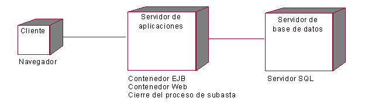
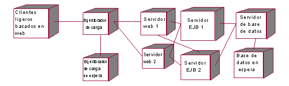
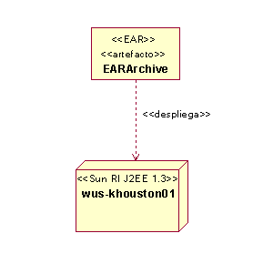

| Directriz: Descripción de la distribución de aplicaciones J2EE |
 |
|
| Elementos relacionados |
|---|
IntroducciónLas aplicaciones J2EE tienen características específicas que permiten un despliegue flexible. Las siguientes secciones corresponden a directrices pensadas para el despliegue de módulos J2EE y aplicaciones J2EE. Consulte la sección Concepto: configuraciones de despliegue de J2EE para obtener más información sobre las configuraciones de despliegue estándar que J2EE proporciona. Modelo de distribuciónLa sección Tarea: descripción de la distribución proporciona un ejemplo genérico de un modelo de despliegue de alto nivel. A continuación hay une ejemplo específico de J2EE, de una aplicación de subastas en línea.  En este ejemplo muy simple, se muestra cada uno de los nodos físicos y proporciona una idea de qué contenedores y procesos se ejecutan en cada nodo. Sin embargo, un despliegue de J2EE puede ser mucho más complejo. En el siguiente ejemplo se muestra un ejemplo más complejo.  En este ejemplo, un equilibrador de carga direcciona peticiones a un clúster de servidores web y servidores de aplicaciones. Una aplicación J2EE puede incluir también varios servidores de nombres JNDI, clientes de aplicación pesados, servidores de mensajes, etc. También es posible complementar el diagrama con protocolos, tipos de conexión de red, cortafuegos, etc. Observe que en el anterior ejemplo, no se listan o modelan los módulos J2EE de cada nodo. Esto se debe a que en estos ejemplos, sólo hay un contenedor EJB lógico y un contenedor web. Todos los EJB y JAR de EJB se despliegan en todos los servidores EJB. Algo parecido ocurre con los componentes web. Otra opción para modelar la distribución de una aplicación es crear un modelo de correlación entre módulos J2EE y/o aplicaciones J2EE con servidores específicos. Esto se muestra en un diagrama de despliegue UML dibujando una dependencia (estereotipo <<deploy>>) desde el archivador al nodo. En el siguiente diagrama se muestra esta opción. En este ejemplo, se correlaciona un archivador J2EE (un EAR) con un nodo (un servidor de aplicaciones específico).  En general, no es necesario crear modelos sobre la asignación de archivadores J2EE con nodos y contenedores. Sin embargo, en algunas circunstancias, puede haber la necesidad que determinados elementos del sistema residan en un nodo con características específicas (por ejemplo, un nodo que dé soporte a una base de datos, o un nodo que dé soporte a un sistema tradicional). En casos como este, se puede desear crear un modelo del despliegue de módulos J2EE en nodos específicos. Además, la creación de modelos de la correlación entre archivadores y servidores es especialmente útil si existe la automatización para dar soporte al despliegue real de archivadores en el servidor especificado. |
© Copyright IBM Corp. 1987, 2006. Reservados todos los derechos. |